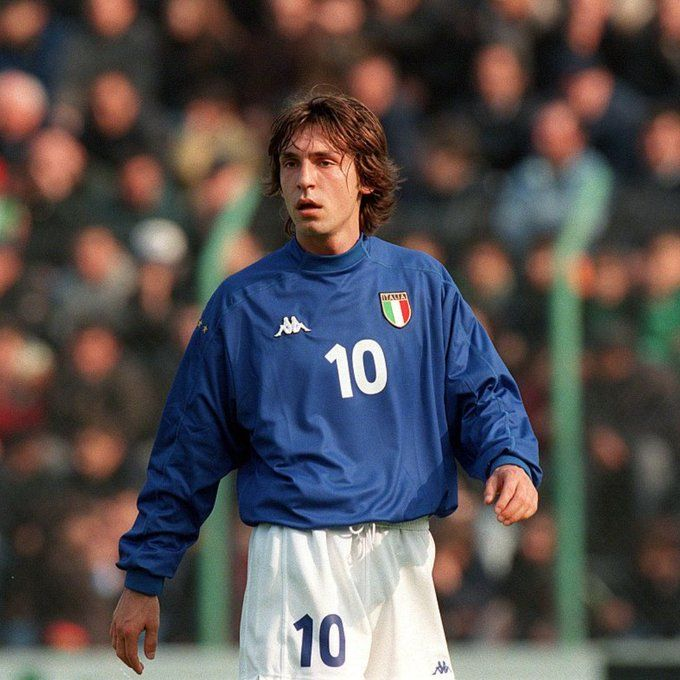
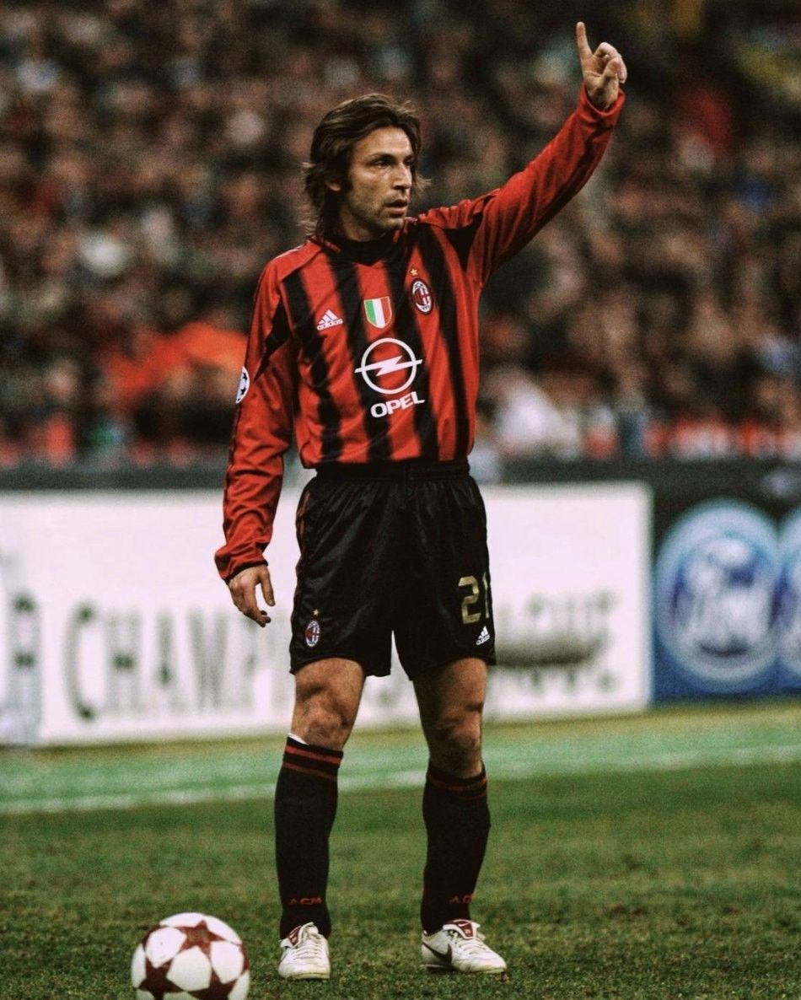
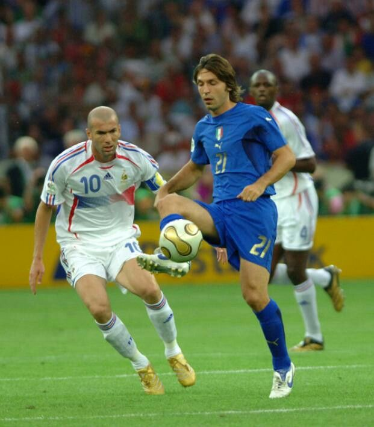
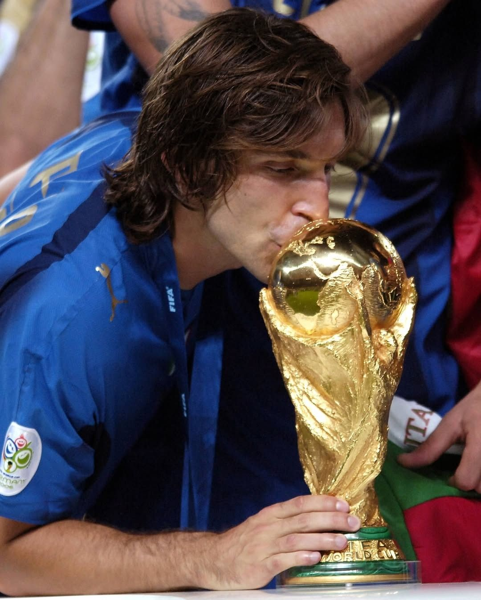
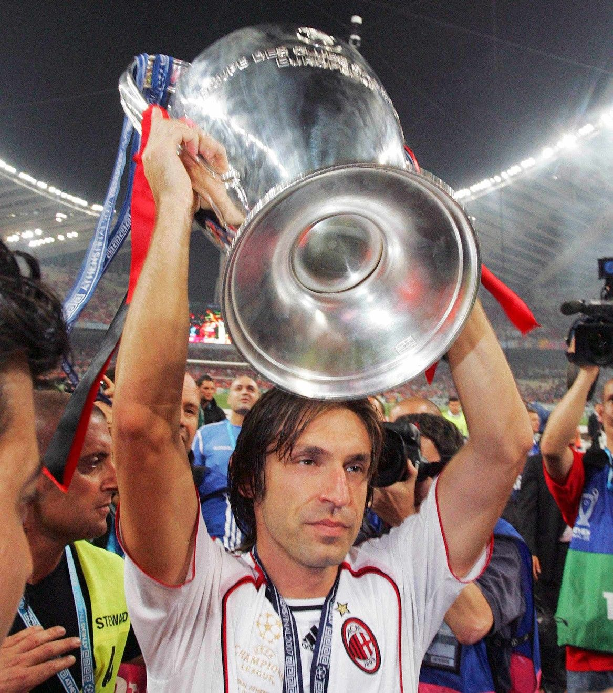

From being moved around the pitch early in his career to redefining a role entirely, Andrea Pirlo played football at his own rhythm. Born in 1979 in Brescia, he found his true home as a deep-lying playmaker at AC Milan, where his vision and passing became the heartbeat of a great side. Calm under pressure and untouchable on the ball, Pirlo dictated games without ever seeming to break a sweat. His range of passing and mastery of set pieces made him a constant threat. He later proved his class again at Juventus, guiding them to domestic dominance. Pirlo didn’t chase the game — he controlled it.


World Cup (1) |

Champions League (2) |

Serie A (6) |

Coppa Italia (2) |

Italian Super Cup (3) |

Super Cup (2) |

Club World Cup (1) |
| 2006 | 2003, 2007 | 2004, 2011, 2012, 2013, 2014, 2015 |
2003, 2015 | 2005, 2013, 2014 | 2004, 2008 | 2008 |




